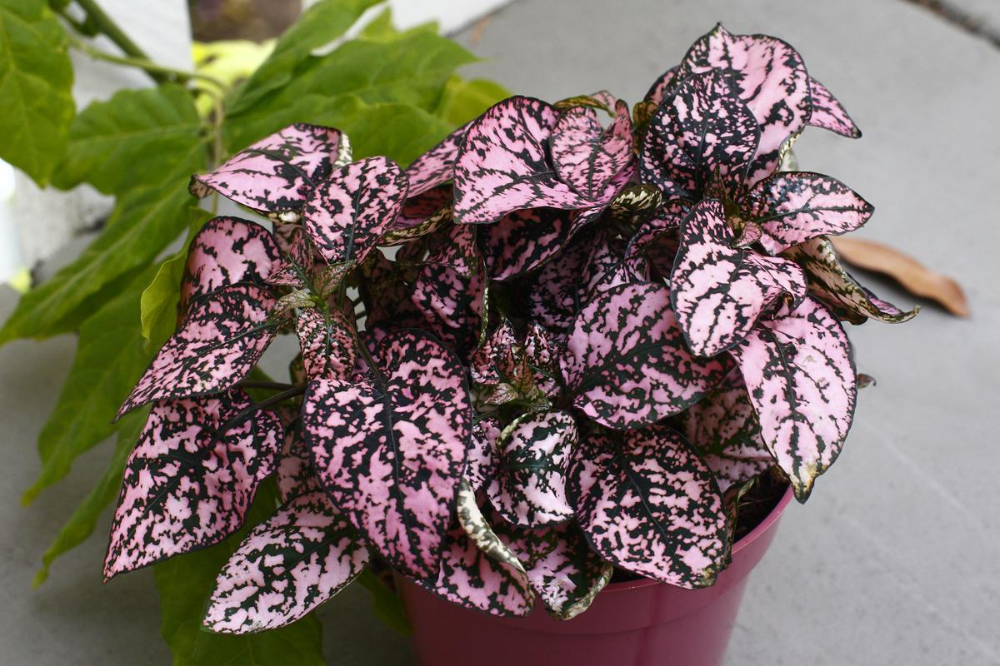
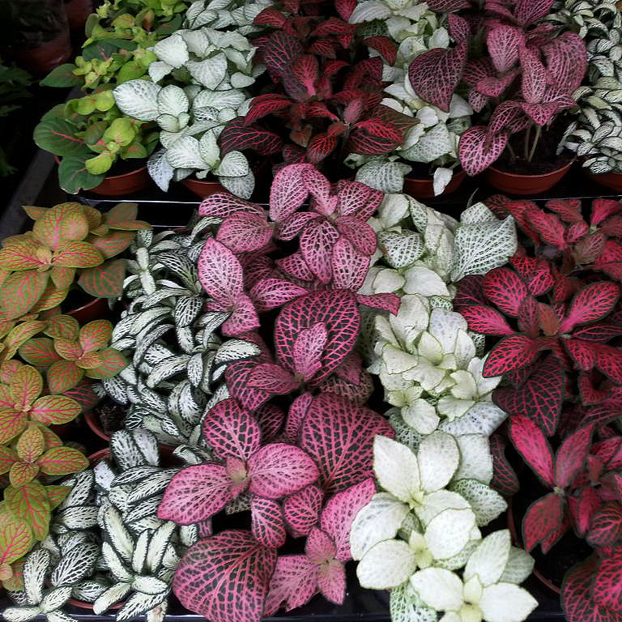
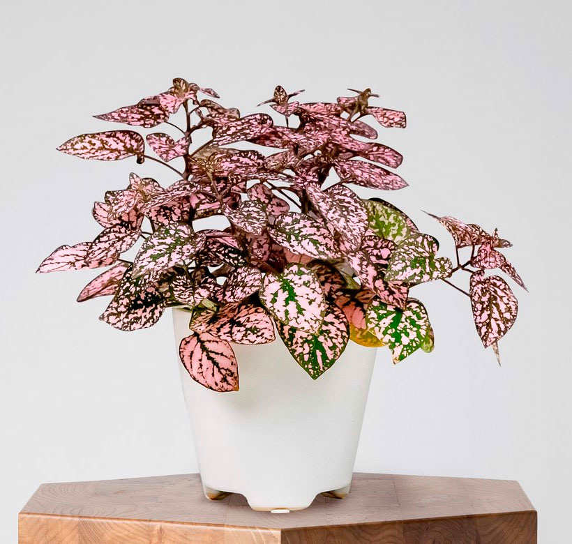
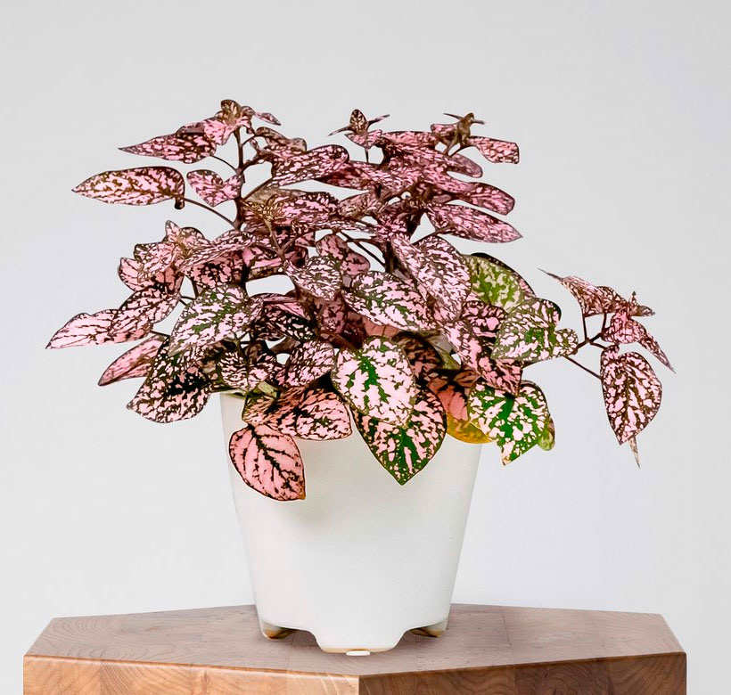
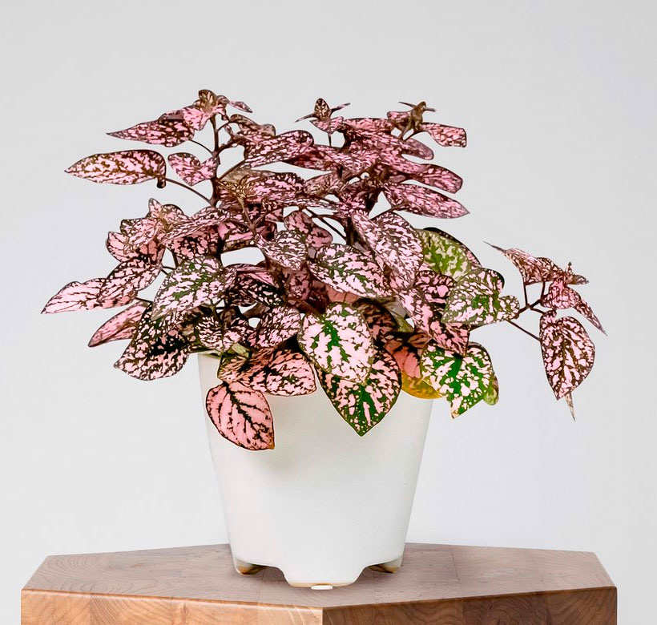

Гипоэстес
Описание
Гипоэстес обладает маленькими листьями, обычно округлой формы, расположенными на коротких черешках. Особенность этого растения - яркий узор на листьях. В зависимости от сорта, узоры могут быть различными, от пятнистых и полосатых до разноцветных и контрастных. Узоры могут быть настолько разнообразными, что листья гипоэстеса кажутся по-настоящему красочными.
Галерея


 


Советы по уходу
Требования
Гипоэстес, или "полка", требует яркого, но непрямого освещения, умеренной температуры (18-24°C), регулярного полива, поддержания влажности почвы, хорошо дренированного грунта, умеренного удобрения и возможно пересадки каждые 1-2 года.